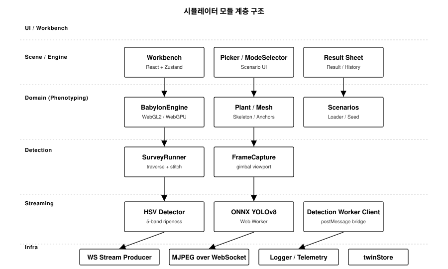
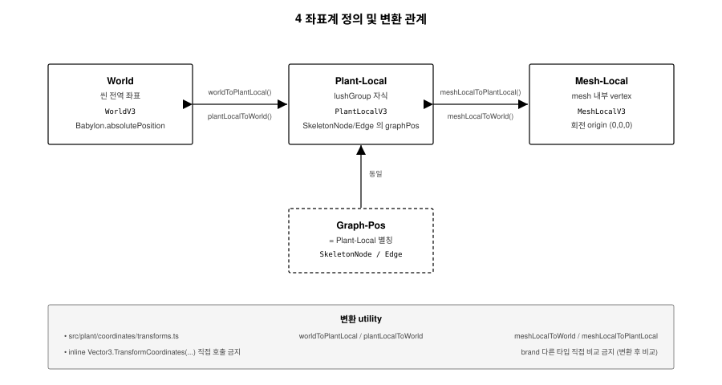
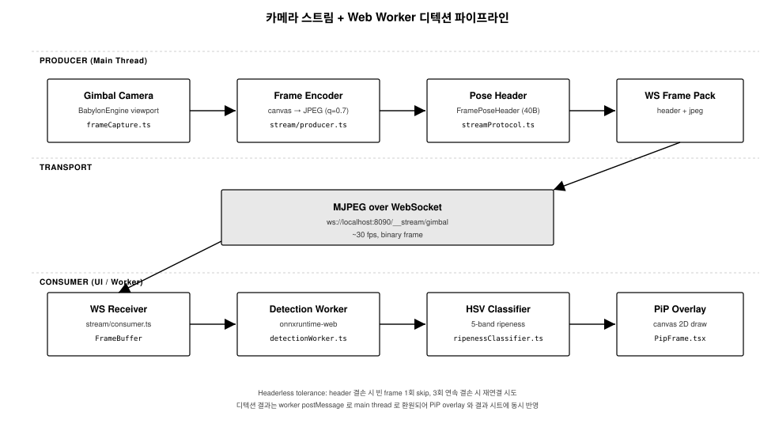

문서 정보
| 항목 | 내용 |
|---|---|
| 문서명 | 시스템 아키텍처 설계서 |
| 산출물 번호 | #5 |
| 과제번호 | RS-2025-02219411 |
| 사업명 | 스마트팜 다부처패키지 혁신기술개발사업 — 과채류 맞춤형 농작업 지능로봇 및 관제 시스템 개발 및 실증 |
| 사업기간 | 2025.04.01 ~ 2027.12.31 |
| 주관연구개발기관 | 메타파머스 |
| 공동연구기관 | 주식회사 비아 |
| 작성일 | 2026.06.18 |
| 산출물 위치 | delivery/06_Architecture_Spec.pdf |
| 산출물 소스 | delivery/sources/05_Architecture_Spec.md |
사업 컨텍스트 및 시뮬레이터 시작품의 위상
사업 개요
본 사업은 스마트팜 다부처패키지 혁신기술개발사업 — 과채류 맞춤형 농작업 지능로봇 및 관제 시스템 개발 및 실증 사업이며, 주관연구개발기관 메타파머스와 공동연구기관 ㈜비아가 공동 수행한다. 사업 전체는 적심·적과 농작업을 수행하는 지능 로봇 본체 + 그를 운용하는 관제 시스템 본 개발 + 실증 사이트 운영의 세 축으로 구성된다.
본 시작품의 위치
본 시뮬레이터 시작품은 사업 본 개발 결과물이 아니라, 관제 시스템 본 개발 및 실증의 시연·검증 환경 보완용 R&D 산출물이다. 구체적으로 다음 세 가지 목적을 가진다.
- 사전 시연 — 실제 로봇·실제 온실에서 관제 화면을 운용하기 전, 가상 환경에서 관제 운용 시나리오를 반복 시연할 수 있는 환경 제공.
- 인터페이스 사전 검증 — 주관기관 관제 시스템과의 연동 항목(WS 스트림 프로토콜, 디텍션 결과 포맷)을 사업 본 개발 단계에서 사전 검증.
- 실증 운용 절차 사전 점검 — 실증 사이트 입회 단계에서 운용 순서, 진단 절차, 디텍션 결과 해석 방법을 사전 점검.
본 시작품이 수행하지 않는 것
본 시뮬레이터는 R&D 시각화·검증 환경이며, 다음은 본 시작품의 수행 범위가 아니다.
- 실제 적심·적과 액추에이터/모션 제어 알고리즘 구현
- 본 사업 관제 시스템의 본 개발 범위 수행
- 클라우드/SaaS 운영 환경 구축
- 상용 배포 및 라이선싱 작업
이 분리는 발주서, 계약서, 검수확인서, 완료보고서의 "과업 제외 범위"로 명문화되어 있다.
시스템 개요
기술 스택
| 영역 | 채택 기술 |
|---|---|
| 3D 렌더링 엔진 | Babylon.js 9.x (WebGL2 / WebGPU 백엔드 선택) |
| 프론트엔드 프레임워크 | React 19, TypeScript 5.9 |
| 상태관리 | Zustand 5.x (도메인 store 분할 구조) |
| 빌드 도구 | Vite 8 |
| 디텍션 런타임 | onnxruntime-web (WASM 백엔드) |
| 카메라 스트리밍 | MJPEG over WebSocket (Vite dev plugin) |
| 워커 | Web Worker (디텍션 추론 오프로드) |
| 학술 모델 엔진 | packages/tomato-engine (TOMSIM/TOMGRO 베이스) |
| 테스트 | Playwright (invariant + probe) |
모듈 계층 전체 그림

모듈 계층 (LAYER_STRUCTURE)
본 섹션은
docs/architecture/LAYER_STRUCTURE.md을 인용한다.
FarmSim Layer Architecture (Iter 35+)
★ 코드 위치 결정 시 본 문서 먼저 읽기.
tests/architecture/iter35-layer-boundary.spec.ts가 invariant 자동 검증.
5 Layer
A. Algorithms (pure math/geometry)
packages/tomato-geometry/src/
- Vec3/Mat4/Quat 연산
- Bezier/Catmull-Rom
- GeoChunk algorithms (leafChunk, internodeChunk, ...)
★ Babylon import 금지 — 순수 수학/기하만.
B. Growth Engine (생장 + 생육 — state evolution)
packages/tomato-engine/src/
GrowthModel.ts(Pass 1~4 daily step)growth/LeafGrowthModel.ts,PhytomerModel.ts, ...Cultivar/Genome/ThermalTime
★ Babylon import 금지 — A layer import 허용 (type만).
생장 (growth, area/length 증가) + 생육 (development, lifecycle stage) 둘 다 본 layer에서 처리. 코드상 같은 GrowthEngine에서 Pass 3 main loop이 둘 다 진행.
C. Plant Base (biology → geometry cache)
src/plant/
PlantBase.ts(axes/leaves/trusses positions cache)skeleton/(graph, populator, R26 contract)leaf/(organ graph, schema)coordinates/,anchors/(math utilities)
★ Babylon import 금지 — A + B layer import 허용.
Iter 36+ migration 후보 (현재 일부 Babylon import 잔존)
| File | 상태 | 처리 |
|---|---|---|
LeafTexture.ts |
Babylon Scene/RawTexture import | Iter 36에 src/rendering/leaf/ 이동 |
LeafGenerator.ts |
Babylon Material/Mesh import | Iter 36에 src/rendering/leaf/ 이동 |
TrussGenerator.ts |
Babylon TransformNode/Mesh | Iter 36에 src/rendering/truss/ 이동 |
leaf/material/getLeafBladeMaterial.ts |
Babylon Material | Iter 36 이동 |
leaf/buildLeafBladeMesh.ts |
Babylon Mesh | Iter 36 이동 |
leaf/devHook.ts |
dev tool | 이동 |
skin/buildPlantSkinMesh.ts |
Babylon Scene | Iter 36 이동 |
skin/SkinEngine.ts |
Babylon | Iter 36 이동 |
skin/StemFamilyTubeNetworkBuilder.ts |
Babylon Mesh | Iter 36 이동 |
skeleton/buildTomatoSkeletonGraph.ts |
catmullRomPath import (path math만) |
type-only 가능 검토 |
anchors/leafAnchor.ts |
import type Mesh (type only) |
허용 |
coordinates/ |
Vector3 value |
검토 |
Iter 35: StemGenerator + FruitGenerator만 이동 완료. 나머지 13 files는 Iter 36+ 일괄 migration.
D. Rendering Engine (Babylon mesh output)
src/rendering/
BabylonEngine.ts(engine init, render loop)SceneInfrastructure.ts(scene setup — ground + GrowthEngine + Showcase + SkinMesh)SceneSetup.ts(조명, IBL, SSAO)ShowcasePlant.ts(Babylon mesh of showcase plant)SkinMeshPlant.ts(canonical leaf mesh — SDF + marching cubes + per-leaf wrapper)SkeletonOverlay.ts(debug visualization)CameraRig.ts,RenderQuality.ts,QualityProbe.tsdockingOverlay/(petiole junction debug)stem/StemGenerator.ts(Iter 35 Phase E ←src/plant/)fruit/FruitGenerator.ts(Iter 35 Phase E ←src/plant/)
★ Babylon 자유. A + B + C layer import 허용.
E. JSON Params (configuration)
packages/tomato-engine/models/
cultivars/*.jsonc(5 cultivar files: tomimaru-muchoo, round-generic, cherry-generic, beef-generic, sansoo)calibration/*.jsonc
★ B layer가 consume. 코드 변경 없이 cultivar 추가/조정.
Import 금지 규칙 (enforcement)
A → 없음 (pure)
B → A (types)
C → A, B (types)
D → A, B, C
E → 없음 (data)
위반 시 tests/architecture/iter35-layer-boundary.spec.ts LAYER-* invariant fail.
Entry Point (single-plant)
App.tsx → SinglePlantApp (구 GreenhouseLayout)
→ SceneCanvas → BabylonEngine
→ buildSceneInfrastructure (D)
→ GrowthEngine (B)
→ ShowcasePlant + SkinMeshPlant (D)
→ SinglePlantOverlay (UI)
생장 vs 생육
- 생장 (growth): area/length 증가
LeafGrowthModel.currentAreaCm2InternodeGrowthModel.lengthMFruitModel.diameter
- 생육 (development): lifecycle stage 전환
PhytomerModelTT thresholdsSenescenceModel(잎 노화)FlowerModel(anthesis)
같은 GrowthEngine 안에서 둘 다 처리 (B layer Pass 3 main loop).
Archive (Iter 35 제거)
src/_archive/ — 24 files. 복원 절차 + 카테고리는 src/_archive/README.md 참조.
관련 docs
LEAF_RENDER_FLOW.md— leaf mesh build canonical pipelineSINGLE_PLANT_MODE.md— 기본 모드 진입/구조COORDINATE_SYSTEMS.md— 4 좌표계 정의MESH_ANCHORS.md— mesh anchor contract
생육 모델링 (GROWTH_MODEL)
본 시뮬레이터의 식물은 3D 시각 자산이 아니라 학술 문헌 기반의 기계적 (mechanistic) 생장·생육 모델의 일일 적분 결과다. 본 chapter는 그 모델의 학술 backbone, canonical state, 시뮬레이션 step, 단위 알고리즘, cultivar 파라미터 스키마, 그리고 literature validation targets를 정리한다.
본 chapter의 의도된 독자는 검수자·인수자 중에서 본 시뮬레이터가 단순 시각화가 아닌 mechanistic crop model 기반임을 평가하려는 R&D 평가자이다.
본 chapter의 위치
이전 chapter "모듈 계층 (LAYER_STRUCTURE)"의 B layer (Growth Engine) 가 다루는 내용을 학술 수준으로 풀어 설명한다. 코드 위치는 다음과 같다.
| 모듈 | 파일 | 책임 |
|---|---|---|
| 일일 식물 상태 적분 | packages/tomato-engine/src/CoreModel.ts |
Reduced TOMGRO 5-state 일일 step |
| 분 단위 / 시간 단위 step | packages/tomato-engine/src/CoreModel.ts |
stepMinutely, stepHourly |
| 생장 main loop | packages/tomato-engine/src/GrowthModel.ts |
Pass 1~3 형태로 phytomer state 갱신 |
| 광합성 | packages/tomato-engine/src/Photosynthesis.ts |
Beer-Lambert + LUE canopy assimilation |
| 동화산물 분배 | packages/tomato-engine/src/SinkAllocation.ts |
Marcelis/Heuvelink sink-strength partition |
| 과실 생육 | packages/tomato-engine/src/FruitGrowth.ts |
Gillaspy 3-phase + Gompertz |
| 일사 / 일주기 | packages/tomato-engine/src/DiurnalEnv.ts, SunPosition.ts |
hourly climate sampling |
| 열역학 시계 | packages/tomato-engine/src/growth/ThermalTime.ts |
GDD 일일 적분 |
| Phytomer 생성 | packages/tomato-engine/src/growth/PhytomerModel.ts |
phyllochron 기반 node emergence |
| Internode 신장 | packages/tomato-engine/src/growth/InternodeGrowthModel.ts |
절간 연신 |
| Leaf 생장 | packages/tomato-engine/src/growth/LeafGrowthModel.ts |
LeafOrganState |
| 노쇠 | packages/tomato-engine/src/growth/SenescenceModel.ts |
잎 senescence |
| Source-Sink proxy | packages/tomato-engine/src/growth/SourceSinkProxyV1.ts |
잎 area-잉여 비율 |
| Axis capacity | packages/tomato-engine/src/growth/AxisCapacityModel.ts |
식물 줄기 운반 한계 |
| Cultivar 카탈로그 | packages/tomato-engine/models/cultivars/*.jsonc |
5종 cultivar JSON 명세 |
| Calibration 참조팩 | growth-calibration/reference/tomato/tomato_tomimaru_reference_v0.1/ |
day-단위 validation target |
학술 문헌 backbone
본 시뮬레이터는 다음 8건의 동료심사 문헌을 _기계적 모델의 root_로 채택한다. 각 식·상수·파라미터는 직접 인용되거나 본 시뮬레이터의 calibration log에 명시된 cultivar 매개로 변경된다. "그럴듯하게 보이도록" 추가된 외형 보정은 없다.
| 인용 | 출처 | 본 시뮬레이터가 채택한 것 |
|---|---|---|
| Heuvelink 1996 | Ann. Bot. 77:71–80 (TOMSIM) | canopy LUE 3.5 g DM/mol PAR; 동화산물 분배; F_fruits_max = 0.660·(1−e^{−0.341·N_f}) saturation |
| Jones, Kenig, Vallejos 1999 | Trans. ASAE 42(1):255–265 (Reduced TOMGRO) | 5-state {N, LAI, W, W_f, W_m} canonical state |
| Gillaspy, Ben-David, Gruissem 1993 | Plant Cell 5:1439–1451 | 과실의 3-phase 발달 (cell division, expansion, ripening) |
| Marcelis 1996 | J. Exp. Bot. 47:1281–1291 | sink-strength 개념; per-organ 상대 강도; abortion threshold |
| Heuvelink 1995 | Physiol. Plant. 94:447–452 | sink-strength 상대값 (fruit 1.0 / leaf 0.35 / stem 0.15 / root 0.07) |
| Goudriaan & van Laar 1994 | Modelling Potential Crop Growth Processes (Kluwer) | Beer-Lambert + canopy integration recipe |
| Anaya-Ramirez 2024 | Comput. Electron. Agric. (Vol. 218) | Gompertz fresh-weight fit (R² > 0.99 across cultivars) |
| CROPGRO 표준 | Boote et al. 1998, Agronomy Society of America | GDD T_base = 10 °C, T_max = 30 °C (cultivar override 가능) |
추가 인용 (특정 sub-system 한정):
| 인용 | 사용처 |
|---|---|
| Nature Sci. Rep. 2022 | truss 내부 acropetal ripening 패턴 |
| PMC 11204166 | 단일 과실 내부 acropetal coloring |
| PMC 10482247 | beefsteak locule count 분포 |
| Wageningen ScienceDirect 2023 | 4-keypoint harvest pose |
위 문헌은 코드 주석에 인용되어 있으며, calibration log 의 모든 파라미터 변경은 문헌 또는 vendor estimate (calibration pending) 라벨 둘 중 하나를 달고 있다.
Canonical state — Reduced TOMGRO 5-state
CoreModel.ts 의 PlantPhysiologyState 는 Reduced TOMGRO (Jones et al. 1999)
의 5 state를 canonical 표현으로 사용한다.
| state | 단위 | 의미 |
|---|---|---|
| N | 정수 | 영양 마디 수 (node count). Pass 2 결과. |
| LAI | m² m⁻² | 단위 지표면당 잎 면적 지수 |
| W | g DM (식물당) | 식물 총 건물중 (vegetative + reproductive) |
| W_f | g DM | 과실 건물중 합 (생장 중 + 완숙 포함) |
| W_m | g DM | 완숙 과실 건물중 (수확 가능) |
본 5-state는 식물 단위로 유지되며, per-truss / per-fruit cohort (TrussCohort,
FruitCohort) 가 그 위에 layer되어 micro level 적분을 보존한다. Cohort
정보가 있어 acropetal ripening (Nature Sci. Rep. 2022) 등 truss-internal 패턴을
다룰 수 있다.
시뮬레이션 step 구조
tomato-engine 은 3 단계의 time-step 을 제공한다.
| step | 기간 | 사용처 | 함수 |
|---|---|---|---|
stepMinutely |
1 min | diurnal photoperiod 적분, hourly climate 변화 추적 | CoreModel.ts:443 |
stepHourly |
1 hour (60× stepMinutely) | 시간 단위 결과 집계 | CoreModel.ts:779 |
stepDaily |
1 day (= 1440 min) | per-day 결과; validation pack 비교 단위 | CoreModel.ts:stepDaily() |
본 시뮬레이터 시작품은 시연 컨텍스트에서 day-단위 step을 기본 채택한다
(주기적 분 단위 적분은 디버그 모드). currentTT (누적 thermal time)는 모든
step에서 공통 시계로 유지된다.
Pass 1 — Thermal time (열역학 시계)
생장의 모든 timing은 chronological time (calendar day)이 아닌 thermal time
(GDD; Growing Degree Days) 로 측정한다. 코드는 growth/ThermalTime.ts 에
분리되어 있으며 cultivar 가 T_base, T_max 를 override 할 수 있다.
일일 GDD 산식 (CROPGRO 표준)
GDD_day = max(0, min(T_max, T_mean) − T_base)
plant.currentTT += GDD_day
기본값:
T_base= 10 °C (CROPGRO tomato canonical)T_max= 30 °C (Heuvelink 1996 high-temperature saturation)
22 °C 상수 환경에서 1 일 = 12 GDD 가 발생한다. 본 시뮬레이터의 reference 환경 ("22 °C 상수, 100 일") = 1 200 GDD 가 누적된다.
Cardinal temperature 의 의미
- T <
T_base: 생장 정지 (GDD = 0) T_base≤ T ≤T_max: 선형 누적- T >
T_max: GDD =T_max − T_base(high-temperature plateau)
식 자체는 모든 phytomer / leaf / truss 의 initiationTT, ageTT,
senescenceProgress 의 공통 시계 로 작용한다.
// 예시 — packages/tomato-engine/src/growth/ThermalTime.ts:46
export function computeGDDDay(
T_mean_C: number,
T_base_C = 10,
T_max_C = 30,
): number {
return Math.max(0, Math.min(T_max_C, T_mean_C) - T_base_C);
}
Pass 2 — Phytomer emergence (영양기관 발생)
새로운 마디 (phytomer; node + 그 위의 leaf + 그 옆구리의 axillary bud) 는 phyllochron 단위로 발생한다 (Heuvelink 1996; Plan §3 sleepy-growing-pretzel).
핵심 식
node.initiationTT = transplantOffsetTT + node.index × phyllochronTT
node.ageTT = currentTT − node.initiationTT
nodeNumber = floor((currentTT − transplantOffsetTT) / phyllochronTT)
기본 organogenesis 설정
// packages/tomato-engine/src/growth/PhytomerModel.ts
const DEFAULT_ORG_CONFIG = {
initialNodeCountAtTransplant: 5, // 정착 시점 (D 0) 이미 5 마디
TT_at_transplant: 280, // 정착 시점 누적 GDD
};
정착 (transplant) 시점에 이미 5 개 마디가 발생되어 있다고 가정하며 (모종 단계의 누적 GDD = 280, CROPGRO seedling 단계 일치). 정착 후 마디는 phyllochron 단위로 추가된다.
Tomimaru 의 경우 phyllochronTT ≈ 35 GDD, 즉 22 °C 환경에서 약 3 일에 1 마디가
발생한다.
Phytomer status — lifecycle
PhytomerModel 은 phytomer 단위의 lifecycle 을 다음 6 상태로 추적한다.
| status | 의미 |
|---|---|
primordium |
정단 분열조직 내부, 가시화 전 |
visible |
가시화 (1차 발생) |
expanding |
잎/줄기 연신 진행 중 |
mature |
최대 크기 도달 |
senescent |
노쇠 진행 (잎 노화) |
removed |
제거 (정지 / 적엽 / 자연 낙엽) |
특정 마디 위치 (cultivar firstTrussNodeIdx 등) 에서 axillary bud 가 vegetative
대신 reproductive (truss) 로 전환되며, 본 spec 은 morphology.firstTrussNodeIdx
morphology.trussIntervalNodes로 결정한다 (Tomimaru: 9 ± 1, 3 마디 간격).
Pass 3 — Photosynthesis (광합성)
Beer-Lambert canopy light interception
엽군 (canopy) 흡수 비율은 Photosynthesis.ts:canopyAbsorbedFraction 에서 다음
식으로 계산한다.
f_abs = 1 − exp(−k · LAI)
k= 0.7 (구형 잎각도분포 가정의 표준 extinction coefficient; Goudriaan & van Laar 1994)LAI는 식물의 현재state.LAI
Light-use-efficiency (LUE) form 일일 동화량
P_gross [g CH2O m⁻² day⁻¹] = LUE · f_abs · PAR_integral_mol
LUE= 3.5 g DM / mol PAR (Heuvelink 1996 의 2.8 g/MJ ≈ 3.5 g/mol PAR)PAR_integral_mol은 일주기 적분 (DiurnalEnv.ts가 hourly climate 로 sampling)- 800 ppm CO₂ enrichment 환경에서 LUE 가 4.0+ 로 상승할 여지가 있으며,
cultivar JSON 의
botanicalOverride.photosynthesis.LUE로 override 가능.
본 식의 단순화 가정은 다음과 같다.
- Bulk-canopy form — 식물당 단일 LAI 값
- 일주기 평균 PAR 사용 (sun/shade leaf partitioning 미적용)
- CO₂ 의존성 — current model registry 의
co2_factor곱셈 (de Pury & Farquhar 1997 정식 채택은 Phase A 로드맵)
// packages/tomato-engine/src/Photosynthesis.ts:35
export function dailyGrossAssimilation(
env: DailyClimate,
LAI: number,
LUE = ACTIVE_MODEL.photosynthesis.LUE_gDM_per_mol_PAR,
): number {
const f_abs = canopyAbsorbedFraction(LAI);
const PAR_mol_per_m2_per_day = env.daily_PAR_integral_mol;
return LUE * f_abs * PAR_mol_per_m2_per_day;
}
Pass 3 (계속) — Source-Sink partitioning (동화산물 분배)
총 가용 assimilate total_supply (= dailyGrossAssimilation − maintenance
respiration) 를 organ 별로 분배한다. Marcelis 1996 + Heuvelink 1995/1996 의
sink-strength 식.
Per-organ relative sink strength
| organ | 상대값 (potential growth rate) | 출처 |
|---|---|---|
| Fruit (truss) | 1.00 | Marcelis 1996 |
| Leaf | 0.35 | Heuvelink 1995 |
| Stem | 0.15 | Heuvelink 1995 |
| Root | 0.07 | Heuvelink 1995 |
분배 식 (strict proportional)
allocation_i = total_supply × (PG_i / Σ PG)
PG_i 는 organ i 의 potential growth rate. Priority hierarchy 는 사용하지 않으며 (Heuvelink TOMSIM 의 채택 방식), 전 organ 이 비례 배분된다.
Heuvelink saturation override — 과실 비율 상한
활성 과실 수가 늘어나도 식물 전체에서 fruits 가 차지하는 비율은 무한히 증가하지 않는다. Heuvelink 1996 TOMSIM 의 saturation 함수:
F_fruits_max = 0.660 · (1 − exp(−0.341 · N_active_fruits))
- N_active_fruits = 0 → F_fruits_max = 0
- N_active_fruits = 10 → F_fruits_max ≈ 0.638
- N_active_fruits → ∞ → F_fruits_max = 0.660
본 cap 이 적용되어 fruit set 이 활발한 truss 단계에서도 vegetative organ 이 무너지지 않도록 보호된다.
잉여 처리 — surplusPolicy
가용량이 demand 보다 클 때의 잉여는 cultivar surplusPolicy 로 결정.
| surplusPolicy | 의미 |
|---|---|
unused_pool |
잉여를 무시 (식물 외부로 lost; 진단용) |
redistribute_to_vegetative |
잉여를 leaf/stem/root 비례로 추가 분배 (기본) |
Pass 4 — Fruit growth (과실 생육 — Gillaspy 3-phase)
각 과실은 Gillaspy 1993 의 3 phase 를 따른다.
| Phase | 기간 | 특성 |
|---|---|---|
| Phase I — Fruit set | ~7 d (개화 → 수정) | hormonal, mass 변화 미미 |
| Phase II — Cell division | 10–14 d 수정 후 | cell count 결정, 초기 mass 증가 |
| Phase III — Cell expansion | 6–7 wk | turgor-driven, > 90 % 최종 부피 도달 |
| Ripening | ethylene-triggered | fresh weight 안정, 색 변화 |
본 시뮬레이터는 Phase II + III + ripening 을 단일 Gompertz curve 로 fresh-weight 차원에서 근사한다 (Anaya-Ramirez 2024, R² > 0.99 fit). Phase I 은 hormonal switch 로 별도 처리.
Gompertz fresh-weight curve
W(t) = a · exp(−exp(−b · (t − τ)))
| 기호 | 의미 | 출처 |
|---|---|---|
| a | asymptote = potentialMassG (cultivar JSON 의 fruit potential 분포에서 sampling) |
cultivar |
| b | rate parameter (per GDD) = cultivar.gompertzRateB × genome.ripeningSpeedFactor |
cultivar |
| τ | inflection point (GDD) = (cellDivisionDurationGDD + cellExpansionDurationGDD) × gompertzInflectionC |
cultivar |
| t | gddSinceFert (cohort setTT 부터의 GDD) |
runtime |
Tomimaru 의 경우:
cellDivisionDurationGDD= 260cellExpansionDurationGDD= 500ripeningDurationGDD= 200- 총 GDD 0 → red = ≈ 960 GDD = 80 일 (22 °C 환경)
Abortion (적과 / 자연낙과) — Marcelis 1996
각 과실은 cohort 의 actual / potential mass ratio 가 일정 기간
threshold 아래로 유지되면 abort 된다. Cohort abortionRiskAccum 이 1.0 을
넘으면 aborted = true 로 flag, 다음 step 부터 분배에서 제외.
본 abortion gate 는 시연 측면에서 "과실 수가 너무 많으면 일부 떨어진다" 는 실제 운영 관찰과 일치한다.
Pass 5 — Senescence / pruning / harvest
잎 노쇠 (senescent leaf area)
SenescenceModel.ts 가 node.ageTT 의 함수로 잎 노쇠 진행을 계산.
senescenceProgress = clamp((ageTT − senescenceOnsetTT) / senescenceDurationTT, 0, 1)
senescenceProgress = 1 인 leaf 는 LAI 기여에서 제외되며 SkinMesh 의
시각 표현에서도 노란 leaf 로 변경.
적엽 / 적심 — scenario-driven
Pruning 은 botanical 자율 행동이 아니라 시나리오 / 운영자 결정 으로
다룬다. Workbench 의 적심 시연에서 pruneApexAtNode(N) 호출이 N+1 이후
phytomer 발생을 중단시키며 phytomer.status = removed 로 flag.
수확 — cultivar.harvestTrigger 기반
과실 cohort 의 gddSinceFert > ripenedGDD 가 true 가 되고 freshMass / potentialMass ≥ 0.9 인 시점에 harvest 가능 (시나리오 harvest-D110-truss3
등의 trigger 자료). 수확 시 cohort harvested = true, 식물 W_f 에서
제외되며 W_m 누적 자료로 보존.
Cultivar JSON 스키마 + 5 종 패키지
본 시뮬레이터는 5 종 cultivar 를 패키지하며, 각각 packages/tomato-engine/models/cultivars/<name>.jsonc 에 한 파일로 정의되어 있다.
| cultivar | type | 마스 (g) | 사용 시나리오 |
|---|---|---|---|
tomimaru-muchoo |
pink beefsteak (F1, Sakata) | 180–230 | Korean smart-farm 표준 |
round-generic |
round red | 100–150 | general showcase |
cherry-generic |
cherry | 15–25 | high-truss density |
beefsteak-generic |
beefsteak | 200–300 | high-mass demo |
roma-generic |
plum / Roma | 60–90 | processing-style |
JSON 스키마 (요약)
{
"layer": "cultivar",
"crop": "tomato",
"metadata": {
"name": "tomimaru-muchoo",
"type": "beefsteak",
"source": "vendor",
"supplier": "Sakata Seeds",
"references": ["Sakata Seeds product spec", "K-smartfarm extension service"]
},
// GDD-based phenology
"phenology": {
"GDD_to_first_flower": 300,
"GDD_per_truss": 100,
"GDD_flower_to_red": 800,
"cellDivisionDurationGDD": 260,
"cellExpansionDurationGDD": 500,
"ripeningDurationGDD": 200,
"trussRipeningSpreadGDD": 100
},
"flowersPerTruss": { "mu": 5, "sigma": 1.0 },
"fruitSetRate": 0.8,
"potentialFruitMassG": { "mu": 200, "sigma": 25 },
// Morphology — 외형 / 토폴로지
"morphology": {
"firstTrussNodeIdx": { "mu": 9, "sigma": 1.0 },
"trussIntervalNodes": 3,
"fruitMaxDiameterMm": { "mu": 82, "sigma": 8 },
"loculeCount": { "mu": 6.0, "sigma": 1.2 },
"heightWidthRatio": { "mu": 0.72, "sigma": 0.09 },
"ribbingStrength": { "mu": 0.22, "sigma": 0.08 },
"asymmetryStrength": 0.07
},
"growthProfile": {
"phyllochronTT": 35,
"plastochronTT": 18,
"baseInternodeLengthCm": 4.2,
"baseLeafAreaTargetCm2": 320
},
// 광합성 / 분배의 cultivar-level override (선택)
"botanicalOverride": {
"photosynthesis": { "LUE_gDM_per_mol_PAR": 3.5 },
"fruitDevelopment": { "gompertz": { "exponentScaling": 1.0 } }
}
}
mu/sigma 가 있는 필드는 식물별 random sampling (seeded; 결정성) 으로
seed-별 cultivar 표현 가능. 본 spec 으로 5 cultivar 가 codebase 변경 없이
교체된다 — 코드는 cultivar JSON 의 consumer 일 뿐.
Calibration Reference Pack v0.1
growth-calibration/reference/tomato/tomato_tomimaru_reference_v0.1/ 에
9 파일로 구성된 reference pack 이 있다. Tomimaru 22 °C constant 환경 0 ~ 100
일 구간의 user-approved validation target 이다 (sourceType = user_target,
referenceRole = initial_calibration_target).
| 파일 | 내용 |
|---|---|
00_reference_manifest.json |
schema = growthReference.v0.1 |
01_plant_timeline_target.csv |
day 0–100 plant-level 지표 (height/LAI/W/W_f/W_m) min·max 쌍 |
02_truss_timeline_target.csv |
truss-별 visible → breaker day 범위 |
03_truss_status_by_day.csv |
(day × truss) → allowed_status_min/max |
04_leaf_timeline_target.csv |
leaf orientation (lateralSpreadDeg / elevationDeg / droopAngleDeg) |
05_fruit_timeline_target.csv |
day × truss × stage + diameter |
06_day33_diagnostic_target.json |
ruleId-prefixed diagnostic rules |
07_initial_growth_model_target.json |
DAY-based target |
08_day_gdd_mapping.json |
22 °C → 12 GDD/day 환산 표 |
본 pack 은 measured ground truth 가 아니며 (confidence = low), 실제
관측 데이터가 도착하면 v0.2 로 갱신된다. 현재 calibration log 가 본 pack
을 기준으로 simulation 결과를 비교한다.
핵심 reference 상수 (Tomimaru, 22 °C constant)
| 일자 | 상태 | 값 |
|---|---|---|
| D 30 | fruitCount max | 0 (D 33 에 과실 가시화는 anomaly) |
| D 30 | leaf lateral_spread_deg max | 90 ° (초과는 anomaly) |
| D 20–30 | Truss 1 visible day | 범위 |
| D 35–45 | Truss 2 visible day | 범위 |
| D 80–100 | first red fruit (Truss 1) | 범위 |
이 reference 가 시뮬레이션과 어긋날 경우 테스트가 실패하는 것이 아니라 calibration regression 으로 분류된다 (시뮬레이터 모델 자체를 보정).
Validation targets — literature
다음 표는 22 °C constant, 100 일, Tomimaru 시뮬레이션 결과가 만족해야 할
literature 범위다. packages/tomato-engine/test-coremodel.ts 가 이 표를 매
release 이전에 자동 검사한다.
| Output | Literature target | Source |
|---|---|---|
| GDD 누적 (TT) | ~1 200 (100 d × 12 GDD/d) | CROPGRO T_base 10 °C |
| Truss count | 8–12 | Heuvelink 1996 (1 truss/wk @ 20 °C) |
| LAI | 3.0–4.0 | TOMSIM mature canopy |
| Plant DM (W) | 500–1 500 g | Heuvelink 1996 Fig. 3 |
| Fruit DM (W_f) | 200–500 g | depends on harvest stage |
| Total fruit FW | 4–6 kg | commercial yield 220 g × ~25 fruits |
| Harvest index (W_f/W) | 0.55–0.65 (target) | Heuvelink 1996 |
| Acropetal max-truss spread | ≥ 1 stage | Nature Sci. Rep. 2022 |
| Phyllochron | ~35 GDD (≈ 3 d) | Heuvelink 1996 |
| Beer-Lambert k | ~0.7 | Goudriaan & van Laar 1994 |
| LUE | 3.0–4.0 g DM / mol PAR | Heuvelink 1996 |
본 표가 만족되지 않으면 시뮬레이터 모델 을 조정한다 (테스트 raw expected 값을 만지지 않는다). 현재 (2026-06-22 baseline) 알려진 deviation:
| Output | 현재 | 목표 | 분류 |
|---|---|---|---|
| Harvest index (HI) | ≈ 0.22 | 0.55–0.65 | Phase D quality model 로드맵 (현재 시작품 scope 외) — maintenance respiration 모델이 과도 |
이 HI deviation 은 본 시작품의 검수 항목이 아니다 (검수 플랜
09_Inspection_Plan.pdf 표 §5 의 합부 기준 에서 명시 제외) — 추후 Phase D
calibration roadmap 에 등록되어 있다.
현재 알려진 제약 + Phase 로드맵
본 시뮬레이터의 생육 모델은 Phase 2 (bulk-canopy + Reduced TOMGRO) 수준 에서 완성된 상태로 본 시작품에 동봉된다. Phase 3+ 의 정밀화 항목은 본 사업 다음 단계의 작업으로 계획되어 있다.
| Phase | 상태 | 핵심 |
|---|---|---|
| Phase 1 | 완료 | Reduced TOMGRO 5-state + GDD 시계 + Phytomer emergence |
| Phase 2 | 완료 | Beer-Lambert + LUE 광합성 + Heuvelink sink-strength partition + Gillaspy 3-phase + Gompertz fruit |
| Phase 2A | 완료 | LeafOrganState + canonical leaf growth |
| Phase A (roadmap) | 미착수 | sun/shade leaf partitioning, de Pury & Farquhar 1997 |
| Phase B (roadmap) | 미착수 | per-axis source-sink (현재는 plant 단일) |
| Phase C (roadmap) | 미착수 | side-shoot allocation 정밀화 |
| Phase D (roadmap) | 미착수 | quality model — HI calibration, maintenance respiration 재조정 |
| Phase E (roadmap) | 미착수 | botanical override 의 cultivar-resolved 우선순위 정리 |
본 시작품의 검수 항목은 Phase 1 + 2 + 2A 의 동작 검증 으로 한정되어 있다. Phase A–E 는 발주측·주관기관 사이 추가 발주 단계의 작업 범위로 정의되어 있다.
본 chapter 의 검증 spec 참조
본 chapter 의 식·상수가 codebase 에서 실제로 그렇게 구현되어 있다는 invariant 는 다음 자동화 spec 으로 매 release 이전에 확인된다.
| Spec | 위치 | 검사 항목 |
|---|---|---|
coremodel-validation |
packages/tomato-engine/test-coremodel.ts |
22 °C × 120 d simulation 의 5-state range |
gdd-baseline |
packages/tomato-engine/test-gdd.ts |
T_base=10, T_max=30 default + cultivar override |
phyllochron |
packages/tomato-engine/test-phyllochron.ts |
phyllochronTT 일치 + nodeNumber 식 |
gompertz-fit |
packages/tomato-engine/test-fruitgrowth.ts |
Gompertz 식 stable + cellDivision/Expansion 분리 |
sink-allocation |
packages/tomato-engine/test-sinkalloc.ts |
sink 강도 1.0/0.35/0.15/0.07 비례 분배 + Heuvelink saturation cap |
phytomer-state |
packages/tomato-engine/test-phytomerstate.ts |
6 status lifecycle 일관성 |
calibration-pack-conformance |
growth-calibration/scripts/check-conformance.ts |
reference pack v0.1 의 day-단위 target conform |
본 spec 들은 monorepo 의 npm test 또는 npm run growth:test 로 일괄 실행
가능하며, 본 산출물 #2 03_Source_Code.zip 의 동일 디렉토리에 포함된다.
검수 시 spec 결과는 10_Test_Report.pdf §4 시험 결과 매트릭스의 산출물 #5
항목에 누적된다.
좌표계 규약 (COORDINATE_SYSTEMS)
본 섹션은
docs/architecture/COORDINATE_SYSTEMS.md을 인용한다.
Coordinate Systems — SSOT
SSOT #185 이 문서는 FarmSim의 좌표계 정의 + 변환 규칙의 단일 진실 출처(SSOT)이다. 좌표 변수 / 좌표 변환 작업 시 반드시 본 문서 참조.
4 좌표계 정의
1. world — Babylon scene 절대 좌표
- 단위: 미터 (m)
- 원점: Babylon scene origin
(0, 0, 0)(Greenhouse 바닥 기준) - 축: Babylon convention — Y up, X right, Z forward
- 사용처:
PlantBase출력 (stem centerline, leaf attachPos, truss curves)mesh.absolutePosition(= world)boundingBox.minimumWorld(= world)
2. plant-local — lushGroup-relative
- 단위: 미터
- 원점: 식물의
lushGroup(Babylon TransformNode) - scene-world 관계:
world = lushGroup.absolutePosition + plant-locallushGroup.absolutePosition.y ≈ 1.062m(SUBSTRATE_TOP_Y for greenhouse plants)
- 사용처:
SkeletonGraph.nodes[id].pos모든 nodeSkeletonEdge.bonePath[i].p0/p1모든 bonemesh.position(parent가 lushGroup일 때 — leafMesh, stem mesh 등)PetioleJunctionPair의 모든 V3 필드
3. mesh-local — mesh 내부 vertex 좌표
- 단위: 미터
- 원점: 각 mesh의
(0, 0, 0)(rotation origin) - world 관계:
world = mesh.getWorldMatrix() × mesh-local- mesh.position(plant-local 위치) + mesh.rotationQuaternion(azimuth + droop) 적용
- 사용처:
chunk.positions(geometry build 결과 Float32Array)mesh.getVerticesData('position')boundingBox.minimum(가상 corner — 실제 vertex 아님)
4. graph — plant-local의 별칭
- SkeletonGraph 컨텍스트에서 plant-local을 가리키는 용어.
- 의미: PlantBase(world) → buildTomatoSkeletonGraph 안에서 lushGroup parent를 거치며 plant-local로 변환됨.
변환 chain — PlantState → Babylon render

핵심: world → plant-local 변환은 buildPlantSkeleton 내부에서만 일어남
(이때 PlantBase의 world 좌표를 그대로 사용하나, parent transform이 lushGroup
이므로 결과적으로 plant-local로 해석됨).
중요 invariant: PlantBase.leaf.attachPosition (world) == SkeletonGraph edge.bonePath[0].p0 (plant-local) 수치는 같음 — 같은 좌표 값이지만 해석되는 좌표계가 다름 (lushGroup 자식인 mesh.position에 set되면 plant-local).
이 invariant가 Iter 18~22에서 혼동 원인 — 좌표 값은 같으나 의미 좌표계가 다르다는 것을 명시하지 않음.
변환 함수 (src/plant/coordinates/transforms.ts)
worldToPlantLocal(world: WorldV3, lushWorldMatInv: Matrix): PlantLocalV3
world → plant-local. lushGroup의 invert world matrix 필요.
// Example
const lushWorldMatInv = lushGroup.getWorldMatrix().clone().invert();
const plantPos = worldToPlantLocal(toWorld(bboxMinimumWorld), lushWorldMatInv);
plantLocalToWorld(plant: PlantLocalV3, lushWorldMat: Matrix): WorldV3
plant-local → world.
meshLocalToWorld(meshLocal: MeshLocalV3, meshWorldMat: Matrix): WorldV3
mesh-local vertex → world. mesh.getWorldMatrix() 사용 (rotation + parent transform 모두 적용).
meshLocalToPlantLocal(meshLocal, meshWorldMat, lushWorldMatInv): PlantLocalV3
mesh-local → plant-local. (mesh-local → world → plant-local 합성).
assertRoundTrip(v: WorldV3, lushMat: Matrix, epsilon=1e-5): void
debug invariant — world → plant → world이 원본과 같은지.
Babylon API 매핑
| Babylon API | 반환/처리 좌표계 | 비고 |
|---|---|---|
mesh.position |
parent-local | 우리 경우 plant-local (parent = lushGroup) |
mesh.absolutePosition |
world | parent transform 적용 |
mesh.getAbsolutePosition() |
world | same as above |
mesh.getWorldMatrix() |
matrix | world matrix (parent + rotation + scale) |
mesh.rotationQuaternion |
mesh-local 회전 | parent-local에서 적용 |
mesh.getVerticesData('position') |
mesh-local Float32Array | vertex 직접 query |
mesh.getBoundingInfo().boundingBox.minimum |
mesh-local 가상 corner | 실제 vertex 아님 |
mesh.getBoundingInfo().boundingBox.minimumWorld |
world 가상 corner | parent + rotation 적용 후 |
Vector3.TransformCoordinates(local, matrix) |
matrix 적용 | 변환 utility 사용 |
중요 함정 (Iter 20 발견): boundingBox.minimum / minimumWorld는 (x_min,
y_min, z_min)의 가상 corner — mesh에 그 위치 vertex가 없을 수 있음.
"leaf의 가장 stem-side vertex"같은 의미 점은 getVerticesData 직접 query
필요.
중요 함정 (Iter 28 발견) — Stale worldMatrix:
mesh.position 또는 mesh.rotationQuaternion 설정 직후 같은 build cycle에서
mesh.getWorldMatrix()를 호출하면 stale matrix (= identity)를 반환한다.
Babylon은 worldMatrix를 _next frame_까지 자동 update하지 않는다.
// ❌ 잘못 — mesh.position 설정 직후 getWorldMatrix() = identity
mesh.position = new Vector3(x, y, z);
mesh.rotationQuaternion = Quaternion.RotationAxis(...);
const mat = mesh.getWorldMatrix(); // ← stale!
const world = Vector3.TransformCoordinates(local, mat); // ← (0,0,0)
// ✅ 올바름 — computeWorldMatrix(true)로 즉시 update
mesh.position = new Vector3(x, y, z);
mesh.rotationQuaternion = Quaternion.RotationAxis(...);
mesh.computeWorldMatrix(true); // ★ 강제 update
const mat = mesh.getWorldMatrix(); // ← 최신
Iter 28 사례: SkinMeshPlant.ts leaf loop에서 mesh 생성 직후 vertex world
변환 시 stale matrix → mesh-local (0,0,0) × identity = world (0,0,0) →
plant-local 변환이 -lushGroup.world 부호 반전 결과 (= -1.062 m) → docking
overlay의 dock_l_leafstart_* 라인이 plant top → world origin (바닥)으로
3.28m 늘어남. fix: m.computeWorldMatrix(true) 한 줄.
검증: tests/architecture/leaf-vertex-world.spec.ts LEAF-VWORLD-01/02.
변수 naming convention
좌표 변수에는 항상 좌표계 suffix:
// 좋음
const tipPlantPos: PlantLocalV3 = ...;
const attachWorldPos: WorldV3 = ...;
const vertexMeshPos: MeshLocalV3 = ...;
const stemNodeGraphPos = node.pos; // graph는 plant-local 별칭
// 나쁨 — 좌표계 모호
const tip = ...; // world? plant-local?
const pos = ...; // 어디 좌표계?
const attachPos = ...; // (Iter 18~22에서 혼동의 원인)
예외: Babylon API 표준 (mesh.position, mesh.absolutePosition) — 이름
변경 X, 사용처에서 좌표계 주석.
좌표계 가설 검증 invariant
tests/architecture/coordinate-contracts.spec.ts의 INV-01~05:
| ID | Invariant |
|---|---|
| INV-01 | SkeletonGraph 모든 node.pos는 plant-local — leafMesh.position과 동일 좌표계 (직접 비교 시 의미) |
| INV-02 | PetioleJunctionPair 모든 V3 필드 plant-local |
| INV-03 | Leaf mesh의 mesh-local x_min vertex의 world → plant-local 변환 = leafMesh.position (≤1mm). Iter 24 contract |
| INV-04 | graph endNode.pos == PlantBase petioleCurve[3] (= tip) (≤0.5mm) |
| INV-05 | 좌표 변환 round trip: world → plant-local → world == 원본 (≤0.01mm) |
invariant 위반 시 spec fail → 좌표 변환 / mesh anchor 코드 버그.
History — Iter 18~24 7번 실패의 좌표계 측면
| Iter | 잘못된 좌표 가정 |
|---|---|
| 18A | mesh.position = world (실제 parent-local) |
| 18B | PlantBase petioleLen vs leafChunk petioleLen 좌표 무관하나 multiplier 다름 |
| 19 | radialDir 계산 시 plant-local vs world 혼동 |
| 20 | docking overlay에서 두 좌표계 비교 (plant-local vs world) |
| 21 | petioleCurve c1/c2 계산을 world arc로 가정 |
| 22 | mesh.position을 attachPos vs tip 사이 flip-flop |
| 24 | boundingBox.minimum이 가상 corner라 vertex 아님 |
전체 상세: docs/calibration-checkpoint-reports/v0.13-iter24-leaf-anchor-fix-comprehensive.md.
각 실패는 본 SSOT 부재로 매번 다른 가정으로 작업한 결과. 본 SSOT + invariant tests로 같은 실수 반복 방지.
Mesh Anchor 규약 (MESH_ANCHORS)
본 섹션은
docs/architecture/MESH_ANCHORS.md을 인용한다.
Mesh Anchors — SSOT
SSOT #186 이 문서는 FarmSim의 각 mesh anchor 계약의 단일 진실 출처(SSOT)이다. 새 mesh type 추가 / mesh.position 변경 / mesh-local vertex shift 작업 시 반드시 본 문서 참조.
Mesh anchor란?
각 mesh의 anchor = mesh-local (0, 0, 0)이 가리키는 의미. 두 가지 역할:
- Position anchor:
mesh.position(parent-local) → 부착 위치 - Rotation origin: mesh-local
(0, 0, 0)= 회전 중심
mesh.rotationQuaternion은 mesh-local origin을 중심으로 회전. 따라서
mesh-local origin이 anchor와 일치해야 회전 적용 후 anchor가 위치
유지된다.
각 mesh의 anchor contract
1. StemFamily tube mesh (StemFamilyTubeNetworkBuilder)
| 항목 | 값 |
|---|---|
mesh.position |
(0, 0, 0) (plant-local, lushGroup 자식) |
| mesh-local origin 의미 | stem 시작점 (= ground 부근 plant root) |
| 회전 origin | mesh-local (0, 0, 0) |
| graph anchor node | mainStem edge의 startNode |
| vertex 분포 | mesh-local 좌표가 PlantBase의 stem centerline과 일치 |
검증: mesh.absolutePosition == graph mainStem.startNode.pos.
2. Leaf blade mesh — per-leaflet since Iter 39 (buildLeafletMeshes)
★ Iter 39 Phase A/B contract 개정: 잎 1장 = N개 leaflet mesh (terminal + primary + intercalary + secondary 각각 1장씩). 이전 contract (1 잎 = 1 통합 mesh, mesh-local origin = "첫 leaflet stem-side")는 historic archive.
| 항목 | 값 |
|---|---|
mesh.position |
leafletSkeletonNode.pos (plant-local, graph SSOT) |
| mesh-local origin 의미 | _개별 leaflet base_의 가장 proximal vertex |
| 회전 origin | mesh-local (0, 0, 0) = leaflet base |
| graph anchor node | leaflet-node (terminal/primary/intercalary/secondary) |
| vertex 분포 | 단일 leaflet plane — normalizeLeafMeshVertices 적용 후 |
| mesh name | skinplant_leaf_{seed}_a{ax}_n{n}_l{idx}_{position} |
Entry function: src/scene/leaf/buildLeafletMeshes.ts:buildLeafletMeshes().
mandatory path — bladeRef/leafletSkeletonNodes 누락 시 throw (Phase K
silent fallback 함정 방지).
petiolule connector (Iter 39 Phase F2): petiolule edge bonePath는 leafletNode 까지 가지 않고 _attach 쪽 20%_만 SDF tube로 생성. leaflet plane이 나머지를 시각적으로 덮음. leafletNode.pos는 그대로 — ANCHOR-05 contract.
SDF skip (Iter 39 Phase F2): lateral-vein, sub-vein은 SDF tube 생성
안 함 — F2.5의 vertex color + normal perturbation으로 surface feature.
★ Iter 39 Phase G2 (Skeleton SSOT 강화):
LeafletNodeRef.attachNodeId필드 명시 저장 — helper lookup 의존 0.LeafletNodeRef.bladeDir필드 명시 저장 — leaflet 장축 방향 (plant-local 단위벡터).- bladeDir 산출 (skeleton 수준):
- terminal: pure distal rachis tangent (rachis 연속).
- lateral (primary/intercalary/secondary):
normalize(lateral × 0.75 + distal × 0.25).
- skin은
rotation = makeLeafQuaternion(bladeDir, WORLD_UP)— read만, 자체 계산 0. - 참조:
docs/architecture/SKELETON_SSOT.md.
★ Iter 39 Phase H0 (petiolule truncation revert):
- G2의
PETIOLULE_VISIBLE_RATIO_BY_POSITION(skeleton bonePath 단축)이 SSOT 위반 (bonePath endpoint ≠ endNode.pos) → SkeletonOverlay에서 leaflet 노드 공중에 떠 있는 것처럼 보임. - H0가 petiolule/lateral-vein bonePath를 full path (attachPos → leafletPos)로
복원. 시각적 truncation 의도는 H4의
EdgeRenderPolicy.skinVisibleFraction로 이동 (docs/architecture/EDGE_RENDER_POLICY.md). - SKELETON-EDGE-01 / NODE-EDGE-INCIDENCE-01 / LEAFLET-REF-01 신규 invariants가
graph SSOT 강제 (
tests/architecture/skeleton-edge-consistency.spec.ts).
Iter 24 contract (commit acfad71, x만 shift) — Iter 39 K3에서 3D 확장:
buildLeafBladeOnly출력 chunk의 vertex.x range는[petioleLen + rachisLen·0.15, petioleLen + rachisLen]정도 (mesh-local).- Iter 24 acfad71:
chunk.positions의x_min만 측정해 모든 vertex.x에서 빼기. - 결과 (Iter 24): 첫 leaflet의 stem-side vertex가 mesh-local
(0, y₀, z₀)— y, z 임의 offset 잔존.
Iter 39 K3 확장 — 3D anchor:
normalizeLeafMeshVertices가 x_min vertex의(x, y, z)모두 shift.- 결과: stem-side vertex = mesh-local
(0, 0, 0).
K3 진단 (probe):
- yzOffset 분포: p50 8.2mm, p95 35mm, max 91mm (Iter 24 산식 기준).
- mesh.position = leafletNode.pos로 set해도 실제 base vertex world position = node.pos + rotation × (0, y₀, z₀) → 시각상 leaflet이 공중에 떠 보임.
- K3로 yzOffset = 0 강제 → leaflet base의 첫 vertex가 leafletNode.pos에 anchor.
Iter 39 L1-B 확장 — Centroid anchor (사용자 close-up 진단 정확):
K3 (strict less-than)은 row=0의 첫 만나는 vertex 선택. LeafletPlaneChunk
산식상 row=0 (stem-side)에 col 0~8 9 vertices가 모두 x = x_min:
- col=0 → z = -halfWidthLeft (leftmost edge)
- col=4 → z = 0 (center)
- col=8 → z = +halfWidthRight (rightmost edge)
K3 산식이 col=0 (left edge)를 anchor로 선택 → leaflet base의 왼쪽 가장자리
가 leafletNode.pos에 매달림 (probe firstMinXOffset avg 7.8mm).
L1-B fix (Option B — Centroid):
// row=0 (x ≈ x_min) vertex들의 y, z 평균을 anchor로 사용.
const EPS = 1e-5;
let sumY = 0, sumZ = 0, count = 0;
for each vertex with |x - minX| < EPS:
sumY += y, sumZ += z, count++
yCenter = sumY / count; zCenter = sumZ / count;
// (minX, yCenter, zCenter) → mesh-local (0, 0, 0).
결과: centroidOffset = 0.000mm (avg over 118 leaflets). leaflet base
중심이 정확히 leafletNode.pos. 사용자 #2 "센터가 아닌 끄트머리에 연결" 해소.
v2 보완 (사용자):
- EPS = 1e-5 (= 0.01mm tolerance, Float32 safe).
- needShift tolerance 비교 (
Math.abs(x) > 1e-9). - ANCHOR-01 invariant = row centroid 기준 (x_min vertex 단일 기준 폐기).
- Probe diagnostic: centroidOffset + firstMinXOffset 둘 다 출력 (차이 visualize).
- assertLeafAnchorInvariant 산식 동기 갱신.
위반 시 증상: K0/K1/K2 (skinVisibleFraction 정책 조정)로 connector tube gap을 해소했음에도, _mesh anchor 자체_에 잔존 offset (~수십 mm)이 있어 leaflet 이 떠 보임 (사용자 close-up 증상). K3 fix로 수학적으로 0.
utility: src/plant/anchors/leafAnchor.ts:normalizeLeafMeshVertices() (K3
확장 후 3D).
검증: tests/architecture/mesh-anchor-contracts.spec.ts:
- ANCHOR-01: 모든 leaf mesh의 x_min vertex가 mesh-local x ≤1mm.
- ANCHOR-04 (K3 3D revised): synthetic fixture로 stem-side vertex = (0, 0, 0) byte-identical 검증 (x, y, z 모두).
assertLeafAnchorInvariant: runtime invariant — stem-side vertex의sqrt(x² + y² + z²) ≤ 1mm.
★ Iter 31 R26 contract — OrganAnchor.rotation 산출 (commit 4029b6b)
leaf_blade OrganAnchor의 rotation은 PlantBase petioleCurve의 마지막 segment
tangent 그대로 사용:
// populateAnchorMorphology.ts:fillLeafAnchor
const lastBone = edge.bonePath[edge.bonePath.length - 1];
const petioleTipTangent = {
x: lastBone.p1.x - lastBone.p0.x,
y: lastBone.p1.y - lastBone.p0.y,
z: lastBone.p1.z - lastBone.p0.z,
};
anchor.rotation = makeLeafQuaternion(petioleTipTangent, { x: 0, y: 1, z: 0 });
petioleTipTangent= leaf가 자라는 방향 (마지막 segment의 곡선 기울기)bladeUp기본값(0, 1, 0)= world up — blade plane horizontal (햇빛 자세)makeLeafQuaternion(AnchorTransform.ts) = lookRotation (Gram-Schmidt + Shepperd's)posture.azimuth/droop/twist등 별도 산식 0 — PlantBase curve가 이미 표현
자세한 contract은 STEM_LOCAL_FRAME.md (R26 final).
Iter 30 Phase 0.D composeLeafRotationLocal contract은 historic (archived).
3. Fruit mesh (createTrussFruitOrgansOnly)
| 항목 | 값 |
|---|---|
mesh.position |
pedicel tip (plant-local) |
| mesh-local origin 의미 | fruit attach point (pedicel 끝) |
| 회전 origin | mesh-local (0, 0, 0) |
| graph anchor node | pedicel edge endNode |
| vertex 분포 | fruit body sphere, mesh-local origin이 stem-side |
현재 상태: Iter 18~24 disconnect bug와 무관 — fruit는 leaf와 다른 mesh 경로. 동일 contract pattern 적용 권장 (Iter 26+).
4. Flower mesh
(현재 코드 구조에서 fruit와 통합 — createTrussFruitOrgansOnly의 일부.)
| 항목 | 값 |
|---|---|
mesh.position |
floral site (plant-local) |
| mesh-local origin 의미 | flower 시작점 |
| 회전 origin | mesh-local (0, 0, 0) |
| graph anchor node | floral site node |
5. Calyx mesh
(현재 코드 구조에서 fruit와 통합.)
| 항목 | 값 |
|---|---|
mesh.position |
fruit base (plant-local) |
| mesh-local origin 의미 | calyx 시작점 |
6. Cotyledon mesh
| 항목 | 값 |
|---|---|
mesh.position |
cotyledon attach point (plant-local) |
| mesh-local origin 의미 | cotyledon stem-side |
Mesh anchor utility — src/plant/anchors/
MeshAnchor interface (anchors/types.ts)
export interface MeshAnchor {
/** mesh.position (plant-local) — Babylon parent (lushGroup) 기준 */
meshPosition: PlantLocalV3;
/** mesh-local origin이 어떤 vertex/위치를 가리키는가 (semantic key) */
meshLocalOriginRole:
| 'stem-root' // StemFamily tube
| 'first-leaflet-stem-side' // Leaf blade (Iter 24 contract)
| 'fruit-attach-pedicel-side' // Fruit mesh
| 'flower-attach' // Flower mesh
| 'calyx-attach' // Calyx mesh
| 'cotyledon-attach'; // Cotyledon mesh
/** anchor가 graph 어느 node를 가리키는가 */
graphAnchorNodeId: string;
/** 회전 origin (= mesh-local (0,0,0)) */
rotationOrigin: 'mesh-local-origin';
}
LeafAnchor 특화 (anchors/types.ts)
export interface LeafAnchor extends MeshAnchor {
meshLocalOriginRole: 'first-leaflet-stem-side';
/** mesh-local (0,0,0)에서 가장 가까운 leaflet의 nodeIdx */
firstLeafletNodeIdx?: number;
}
normalizeLeafMeshVertices (anchors/leafAnchor.ts)
/** Iter 24 acfad71 — leaf chunk의 vertex.x_min을 0으로 shift.
* buildLeafBladeOnly 호출 후 반드시 적용.
* - chunk.positions의 첫 leaflet stem-side vertex가 mesh-local (0,?,?)에 위치.
* - SkinMeshPlant에서 leafMesh.position = petiole tip 설정 시 자동 정합.
*
* byte-identical to LeafGenerator.ts acfad71 inline code. */
export function normalizeLeafMeshVertices(chunkPositions: Float32Array | number[]): void;
makeLeafAnchor (anchors/leafAnchor.ts)
/** Leaf anchor 생성 + invariant 검증 helper. */
export function makeLeafAnchor(
petioleTipPlantPos: PlantLocalV3,
graphTipNodeId: string,
firstLeafletNodeIdx?: number,
): LeafAnchor;
assertLeafAnchorInvariant (anchors/leafAnchor.ts)
/** Invariant 검증: mesh의 vertex.x_min이 mesh-local (0,0,0) 근처에 있는지.
* ≤epsilon (기본 0.001m = 1mm). 위반 시 throw — normalizeLeafMeshVertices
* 호출 누락 catch. */
export function assertLeafAnchorInvariant(mesh: Mesh, epsilon?: number): void;
새 mesh type 추가 시 절차
- anchor contract 결정: mesh-local origin이 무엇을 가리키는지.
MeshAnchor.meshLocalOriginRoleenum에 추가.- 본 문서의 "각 mesh의 anchor contract" 표에 row 추가.
makeXxxAnchorhelper 작성 (anchors/xxxAnchor.ts).- vertex shift / normalize 필요 시
normalizeXxxMeshVertices작성. - invariant test 추가 (
tests/architecture/mesh-anchor-contracts.spec.ts). - CLAUDE.md에 새 mesh type 사용 시 helper 참조 룰 추가.
Babylon convention 함정
1. mesh.position은 parent-local
// 잘못 (Iter 18A 가정)
const tip = leafBase.petioleCurve[3]; // world
leafMesh.position = new Vector3(tip.x, tip.y, tip.z); // parent-local 기대
// → 잘못 — tip(world) ≠ plant-local (lushGroup parent)
정답: PlantBase 좌표는 world이지만, mesh.parent = lushGroup이므로 결과
적으로 plant-local로 해석됨. lushGroup transform이 적용된 상태에서 mesh가
그려지므로 visual 결과는 정확. 그러나 leafMesh.position의 좌표계 정의는
parent-local (= plant-local).
2. boundingBox.minimum은 가상 corner (Iter 20 발견)
// 잘못 (Iter 24 이전)
const visualStart = mesh.getBoundingInfo().boundingBox.minimum; // 가상 corner
// → 실제 vertex 아님. (x_min, y_min, z_min)가 동시에 존재하는 vertex는 거의 없음.
정답: 실제 mesh vertex 위치는 mesh.getVerticesData('position')로 직접
query. 의미 점 (예: "leaf의 가장 stem-side vertex")이 필요하면 그에 맞는
조건으로 vertex array 검색.
// 정답
const verts = mesh.getVerticesData('position');
let minLx = Infinity, minLy = 0, minLz = 0;
for (let i = 0; i < verts.length; i += 3) {
if (verts[i] < minLx) {
minLx = verts[i];
minLy = verts[i + 1]; // 같은 vertex의 y
minLz = verts[i + 2];
}
}
// (minLx, minLy, minLz) = 실제 vertex (mesh-local)
3. 회전 적용 시 anchor 보존 의무
mesh.rotationQuaternion이 mesh-local origin 중심 회전. anchor가 mesh-local
origin이면 회전 후 anchor 위치 유지.
leaf의 경우 azimuth(Y axis) + droop(Z axis) 회전. droop이 mesh-local Z 축 회전이므로 vertex가 mesh-local (1, 0, 0)이라면 회전 후 (cos·1, -sin·1, 0). mesh.position이 anchor이므로 회전 후 world에서 anchor 유지, vertex는 그 회전된 방향으로 이동.
중요: vertex shift(normalize) 의무 — 그렇지 않으면 anchor가 가상 origin 이지 실제 vertex가 아니므로, 회전 후 anchor와 vertex가 다른 위치에 도달.
Mesh anchor invariant 자동 검증
tests/architecture/mesh-anchor-contracts.spec.ts:
| Test | Invariant |
|---|---|
| ANCHOR-01 | 모든 skinplant_leaf_* mesh의 vertex.x_min이 mesh-local (0, 0, 0) 근처 (≤1mm). Iter 39부터 per-leaflet — 각 leaflet base = mesh-local origin. |
| ANCHOR-02 | leafMesh.absolutePosition (world)이 graph petiole endNode.pos (world 변환 후) ≤1mm 일치 |
| ANCHOR-03 | 모든 organ mesh의 anchor가 contract와 일치 |
| ANCHOR-04 | normalizeLeafMeshVertices byte-identical to acfad71 inline 로직 |
| ANCHOR-05 (Iter 39 Phase F6) | skinplant_leaf_*_l\d+_* mesh의 mesh.position == graph.nodes[matchingLeafletNodeId].pos (≤1mm). Phase K(09def1d) index-mismatch 함정을 catch. |
위반 시 test fail → mesh anchor 코드 버그.
History — Iter 24 acfad71 (final fix)
LeafGenerator.ts vertex shift (acfad71):
// 첫 leaflet의 가장 stem-side vertex(min x)가 mesh-local (0, 0, 0)에
// 오도록 정확히 정렬. 의도: mesh-local origin = leaf anchor = SDF
// petiole tip 위치.
let minX = Infinity;
for (let i = 0; i < chunk.positions.length; i += 3) {
if (chunk.positions[i] < minX) minX = chunk.positions[i];
}
if (Number.isFinite(minX) && minX !== 0) {
for (let i = 0; i < chunk.positions.length; i += 3) {
chunk.positions[i] -= minX;
}
}
이 로직이 normalizeLeafMeshVertices utility로 추출됨 (본 SSOT의 Iter 25
정리 작업).
Semantic Graph (SEMANTIC_GRAPH)
본 섹션은
docs/architecture/SEMANTIC_GRAPH.md을 인용한다.
Semantic Skeleton Graph (SSOT #187)
Iter 26 이후 FarmSim의 식물 시각 단일 진실 출처(SSOT)는
SemanticSkeletonGraph이다. 시뮬레이션 데이터(PlantState, PlantBase, cultivar JSONC)는 이 graph로 매핑된 뒤, 모든 시각 소비자(Skin, Overlay, Acceptance)는 graph만 본다.
본 문서는 graph schema · 데이터 흐름 · 4 원칙 · 새 organ/mesh 추가 절차를 한 곳에서 정의한다.
관련 SSOT:
- SSOT #185 COORDINATE_SYSTEMS — 좌표계
- SSOT #186 MESH_ANCHORS — mesh-local origin 계약
- [SSOT 4.4 / 8 / 180] —
src/plant/skeleton/PlantSkeletonGraph.ts헤더 주석
0. 핵심 4 원칙
- Skeleton node는 명확한 데이터를 담는다 — 좌표·형태·상태·시각힌트.
- 노드 자체로 시각화될 수 있다 —
node.visualHint를 그대로 직렬화하면 Overlay. 색·shape·label 결정은 graph populator에서 하고, Overlay는 그것을 읽기만 한다.- 시뮬레이션 데이터는 모두 skeleton으로 들어온다 —
PlantState,PlantBase, cultivar JSONC는SkeletonPopulator의 입력일 뿐이며, 그 이후 graph가 single source of truth.- Skin engine은 단순 시각화만 — graph + style → mesh. biology 모름.
SkinEngineRenderOpts에서plantBase·state인자가 자체 제거된다 (fallback도 없음).
이 4 원칙이 깨지면 Iter 18~24 leaf disconnect 7번 실패와 동급 위험. SSOT #185(좌표계) + #186(mesh anchor) + 본 #187(graph 의미)이 모두 묶여 하나의 안전망이다.
1. 데이터 흐름 (one-way)
[PlantState · PlantBase · cultivar JSONC] ← simulation truth (biology)
│
▼ ─────────────── 유일한 simulation → graph 매핑 지점
SkeletonPopulator
(src/plant/skeleton/buildTomatoSkeletonGraph.ts)
│
▼
SemanticSkeletonGraph ← visual single source of truth
(nodes + edges + organAnchors + visualHints)
│
├─→ SkinEngine (graph + style → 3D mesh; biology 모름)
├─→ SkeletonOverlay (node.visualHint 직렬화)
└─→ AcceptanceProbe (graph 자체 invariant 검증)
규칙:
PlantState/PlantBase/ cultivar JSONC 직접 참조는SkeletonPopulator단 한 곳에서만 일어난다. 그 외 모든 시각 경로는 graph를 읽는다.- 시뮬레이션 tick → populator 재호출 → graph 갱신 → 시각 재렌더. 시각이 중간에서 biology를 다시 보지 않는다.
이 흐름이 만족되는지는 invariant test로 자동 검증한다
(tests/architecture/skeleton-populator-isolation.spec.ts — PR 2-0).
2. Graph schema
상세 정의는 src/plant/skeleton/PlantSkeletonGraph.ts. 본 절은 의미·출처·
사용처를 요약한다.
2.1 SkeletonNode
| 필드 | 타입 | 의미 | 출처 | 사용처 |
|---|---|---|---|---|
id |
string |
unique within graph | populator | 모든 참조 |
pos |
V3 (plant-local) |
노드 위치. SSOT #185 INV-01에서 검증 | populator | Skin, Overlay |
radius |
number |
줄기 표면 반지름 | populator | Skin tube builder |
edgeIds |
string[] |
incident edges | populator | graph traversal |
type |
SkeletonNodeType? |
식물학적 역할 (13종) | populator (PR 2-1) | Skin, Overlay |
frame |
LocalFrame? |
tangent/normal orthonormal frame | populator (PR 2-1) | mesh orientation |
visualHint |
NodeVisualHint? |
자기 표현 (color/shape/size/label) | populator (PR 2-1) | Overlay 단독 |
SkeletonNodeType 13종 (main-stem-node · side-shoot-node ·
petiole-root · petiole-tip · leaf-blade-root · truss-root ·
peduncle-node · rachis-node · pedicel-root · pedicel-tip ·
fruit-root · flower-root · calyx-root) — crop-agnostic 출발점. 다른
crop은 union을 확장.
2.2 SkeletonEdge
| 필드 | 타입 | 의미 | 출처 | 사용처 |
|---|---|---|---|---|
id / type / startNodeId / endNodeId |
(기존) | edge 식별 + 토폴로지 | populator | 모든 참조 |
bonePath |
SkeletonBone[] |
densified centerline capsules | populator | SDF + 마칭큐브 |
parentEdgeId |
string | null |
cut hierarchy | populator | Phase 5 cut |
cuttable / semanticLabel / attachedOrganIds |
(기존) | UI/legacy | populator | UI |
organAnchors |
OrganAnchor[]? |
non-edge organ 앵커 | populator (PR 2-2) | Skin leaf/fruit |
renderPolicy |
EdgeRenderPolicy? |
렌더 정책 (radius, junction, material, visual) | populator (PR 2-3) | Skin tube + Overlay |
2.3 OrganAnchor (Iter 26 확장)
| 필드 | 타입 | 의미 |
|---|---|---|
id / kind |
(기존) | 앵커 식별 |
anchorNodeId |
string |
Iter 27 — Joint anchor. organ이 부모 줄기/knuckle에 부착되는 SkeletonNode. Alarm reference: 정상 plant에서 반드시 chain.rootNodeId와 _동일 노드_를 가리켜야 한다 → attachment line 두 vertex 같은 위치 → 라인 길이 0 → 시각 alarm 없음 = 정상 |
meshAnchorNodeId |
string? |
Iter 27 — Mesh attach. organ mesh가 실제 놓이는 위치 (mesh.position). leaf: petiole tip, fruit/flower/calyx: pedicel tip. 없으면 anchorNodeId로 fallback (legacy) |
morphology |
AnchorMorphologyHint? |
static 형태 — cultivar 1회 복사 |
state |
OrganState? |
per-tick simulation 상태 — 원칙 3 |
chain |
OrganChain? |
rootNodeId → attachmentNodeId 노드/엣지 chain. chain.rootNodeId == anchorNodeId 동일성 보장 = ATTACH-LINE-01 invariant |
visualHint |
AnchorVisualHint? |
자기 표현 — 원칙 2 |
Attachment line alarm 디자인 (Iter 27)
SemanticOverlay attachment line은 anchor.anchorNodeId ↔ anchor.chain.rootNodeId 두 노드를 잇는 dashed line. 두 필드가 같은 노드를 가리키면 line의 두 vertex가 동일 world position → 라인 길이 0 → 시각상 안 보임 = 정상. 회귀 시 두 필드 mismatch → 라인 > 0 → 즉시 시각 alarm + tests/architecture/attach-line-zero.spec.ts FAIL.
이 디자인은 Iter 18~24 "잎-줄기 disconnect" 패턴 재발 자동 감지가 목적. organ-stem joint 매핑이 어긋날 때 사용자가 즉시 시각으로 catch.
2.4 EdgeRenderPolicy
| 필드 | 의미 |
|---|---|
radius.{biological, render, min} |
biology truth + render floor (mm 0.8 등) |
junction.{embedDepthM, radialDir, parentContext} |
부모 줄기 표면 정합 정보. parentContext는 StemFamilyTubeNetworkBuilder.stats.parentContextByEdgeId와 동일 schema |
material.role |
셰이더/텍스처 선택 (main-stem, petiole, …) |
visualHint.{color, lineWidth} |
overlay line 표현 — 원칙 2 |
3. SkeletonPopulator 책임
buildTomatoSkeletonGraph(plantBase, opts) 가 유일한 simulation → graph
매핑 지점. 다음을 모두 수행:
- node 생성 +
pos(plant-local) ·radius·edgeIds채움. - node
type부여 (식물학적 역할). - node
frame계산 (tangent + normal). - node
visualHint매핑 (type별 default — main stem 갈색 sphere 6mm 등). - edge 생성 + bonePath · parentEdgeId · semanticLabel.
- edge
renderPolicy채움 (radius,junction.parentContext,material.role,visualHint). organAnchor의morphology·state·chain·visualHint채움 (PlantBase / PlantState에서 복사).
이후 Skin/Overlay/Acceptance는 graph만 본다. populator 외 simulation 참조는 자동 isolation test가 catch (PR 2-0).
4. Skin 계약 (원칙 4)
SkinEngineRenderOpts 시그니처:
interface SkinEngineRenderOpts {
graph: PlantSkeletonGraph;
style: SkinStyle;
scene: Scene;
// plantBase / state 인자 없음 — biology 모름.
}
SkinMeshPlant에서 defaultSkinEngine.render({ graph, style, scene })
하나만 호출. 디버그용 dock probe 등 PlantBase가 필요한 코드는 별도 함수
(createDockingDebugProbe(graph, plantBase))로 분리하며 Skin 본 경로에
없다.
invariant:
src/twin/SkinMeshPlant.ts에서 SkinEngine 호출 인자에plantBase0건.src/plant/skin/**전역에서 PlantBase / PlantState import 0건.
tests/architecture/skin-engine-graph-only.spec.ts (PR 5-1)에서 자동 검증.
5. Overlay 계약 (원칙 2)
SkeletonOverlay는 graph를 받아 다음을 그릴 뿐:
for (const node of graph.nodes) {
if (!node.visualHint) continue;
drawMarker(node.pos, node.visualHint);
}
for (const edge of graph.edges) {
drawLine(edge.bonePath, edge.renderPolicy?.visualHint);
}
for (const anchor of allAnchors(graph)) {
drawCircle(anchor.anchorNodeId, anchor.visualHint);
}
invariant:
src/twin/SkeletonOverlay.ts에서 hex color 리터럴 0건 (모두 visualHint에서 옴).- marker shape · label · arrow 표시 여부도 visualHint 기반.
색·라벨 변경 = populator에서 visualHint를 다른 값으로 채우면 끝.
6. 새 organ / mesh 추가 절차
기존 mesh anchor 절차(SSOT #186)에 더해 graph 표현 작성이 필요하다.
- SkeletonNodeType union 확장 (
PlantSkeletonGraph.ts). - node.visualHint default 매핑 추가 (populator).
- organ anchor kind 추가 (필요 시) —
OrganAnchorKindunion + populator. AnchorMorphologyHint확장 — 새 organ-specific 필드.material.role추가 (edge 동반 시).- Populator에서 morphology · state · chain · visualHint populate.
- Skin consumer에 분기 추가 — graph만 보고 render.
- invariant test 갱신:
semantic-graph-population.spec.ts— 신규 type 채워짐 확인anchor-completeness.spec.ts— 신규 anchor 완성도
- 본 문서의 schema 표 갱신.
7. History
- Iter 26 PR 1-1 —
SkeletonNode.type/frame/visualHintschema 도입. - Iter 26 PR 1-2 —
OrganAnchor.morphology/state/chain/visualHintschema. - Iter 26 PR 1-3 —
EdgeRenderPolicyschema. - Iter 26 PR 1-4 — 본 문서 (SSOT #187).
- Iter 26 PR 2-0 —
SkeletonPopulatorisolation test. - Iter 26 PR 2-1~2-3 — populate.
- Iter 26 PR 3-1~3-2 — Skin read path 전환.
- Iter 26 PR 4-1~4-2 — Overlay = visualHint 직렬화.
- Iter 26 PR 5-1 — SkinEngine API 정화 + graph-only acceptance.
8. 검증
자동 invariant tests (tests/architecture/):
| Test | 검증 대상 | 도입 PR |
|---|---|---|
coordinate-contracts.spec.ts (#185) |
좌표계 invariant | Iter 25 |
mesh-anchor-contracts.spec.ts (#186) |
mesh-local origin | Iter 25 |
skeleton-populator-isolation.spec.ts (#187) |
populator 외 sim 참조 0 | PR 2-0 |
semantic-graph-population.spec.ts (#187) |
모든 node type+frame+visualHint | PR 2-1 |
anchor-completeness.spec.ts (#187) |
모든 anchor morphology+state+chain+visualHint | PR 2-2 |
skin-engine-graph-only.spec.ts (#187) |
Skin에서 plantBase 0 참조 | PR 5-1 |
총 6 hard invariant — 4 원칙이 깨지면 즉시 적색.
스트림 프로토콜 — MJPEG over WebSocket
개요
본 시뮬레이터는 짐벌 카메라 영상을 WS 기반 MJPEG 스트림으로 발행한다. 이 구조는 (a) PiP 표시, (b) Web Worker 디텍션, (c) 관제 운영자가 보는 화면을 모두 같은 source-of-truth로 묶기 위함이다.
WS 엔드포인트
ws://<host>/robot/<streamId>?role=producer
ws://<host>/robot/<streamId>?role=consumer
- streamId 기본값:
phenotyping/gimbal - producer 1 ↔ consumer N (fanout)
- 토큰/인증 없음 (localhost 전용 dev 서버)
- Vite dev plugin (
tooling/vite/plugins/camStream.ts) 가 동일 포트 8090에 함께 mount
프레임 포맷
매 프레임마다 두 메시지 쌍으로 전송:
- Text 메시지 —
FramePoseHeaderJSON - Binary 메시지 — JPEG 압축 RGB 바이트
소스: src/phenotyping/streaming/streamProtocol.ts:20-49
export interface FramePoseHeader {
ts: number; // performance.now() at capture
railX: number; // 레일 X 위치 (m)
panRad: number; // gimbal pan (rad)
pitchRad: number; // gimbal pitch (rad)
camWorldX: number; // 카메라 world 좌표 X
camWorldY: number; // 카메라 world 좌표 Y
camWorldZ: number; // 카메라 world 좌표 Z
width: number; // JPEG decoded 폭 (px)
height: number; // JPEG decoded 높이 (px)
fovRad: number; // 카메라 FOV (rad)
jpegQuality: number; // 0..1
frameIdx: number; // producer-session 내 단조 증가
}
Producer 측 동작
src/phenotyping/streaming/gimbalCameraStreamer.ts — Babylon scene의 onAfterRenderObservable에서 throttled (기본 15 fps):
rtt.render()— RTT에 짐벌 카메라 시점 렌더rtt.readPixels()— RGBA Uint8Array 추출OffscreenCanvas.convertToBlob({type:'image/jpeg', quality:0.7})— JPEG 인코딩- Text frame (header JSON) + Binary frame (JPEG bytes) WS 송신
Consumer 측 동작
두 종류의 consumer가 동시에 동일 스트림 구독:
- PiP 표시 (
src/phenotyping/ui/RobotCameraView.tsx) — JPEG 바이트를URL.createObjectURL+<img>로 렌더, 자동 재연결. - 디텍션 워커 (
src/phenotyping/streaming/detectionWorker.ts) —createImageBitmap→OffscreenCanvas→getImageData→ 디텍터 실행.
페일오버 / 재연결
- producer disconnect 시 relay가 모든 consumer에
{__event: 'producer-detached'}텍스트 메시지 발행 - consumer는 1.5초 간격으로 재연결 시도
- PiP는 disconnect 시 검은 화면 + "reconnecting…" 텍스트 오버레이
Web Worker 디텍션 파이프라인
개요
ONNX YOLO 추론은 50–200 ms 소요되므로, 메인 스레드(60 fps UI)를 차단하지 않도록 Web Worker로 오프로드. 좌표 역투영은 Babylon scene 접근이 필요하므로 메인 스레드에서 수행.
모듈
| 모듈 | 책임 |
|---|---|
src/phenotyping/streaming/detectionWorker.ts |
Worker — WS consumer · ONNX 추론 · 결과 postMessage |
src/phenotyping/streaming/detectionWorkerClient.ts |
Main — Worker spawn · 결과 수신 · raycast + worldY/plant-tag 필터 · surveyAppendLiveDetections 호출 |
흐름

백 프레셔
- 이전 추론이 진행 중이면 새 프레임 드롭 (
inFlight플래그) - 드롭된 프레임 카운트는 디버그 로그로만 기록
디텍터 교체
Detector interface (src/phenotyping/domain/detectors/types.ts)를 구현한 새 클래스를 detectors/index.ts에 등록하면 Workbench에서 선택 가능. HSV / ONNX-YOLO / Ground-truth 세 가지가 기본 제공.
로깅 시스템 (LOGGING)
본 섹션은
docs/architecture/LOGGING.md을 인용한다.
Logging System — namespace + opt-in
Production source의 console 호출은 모두
createLogger(ns)경유. 기본 boot 출력 =[progressive] complete1줄 + warn/error. 필요시 URL?debug=engine,growth또는localStorage.debug='*'로 opt-in.Plan SSOT:
.claude/plans/sleepy-growing-pretzel.mdEnforcement:tests/architecture/logger-system.spec.ts+ Phase L6 NO-DIRECT-CONSOLE
왜 namespace logger인가
Iter 31 Phase H 이전: production source에 78건 ad-hoc console.log/warn/error
호출 + 25+ 개 prefix ([BabylonEngine], [SkinMeshPlant], [NodeGrowthContext],…).
Dev mode boot에 30+줄 출력 → ⚠ floating candidates 같은 _진짜 warning_이
build stats 사이에 묻힘.
Phase L0~L4: 모두 10 namespace + 4 level의 createLogger(ns) API로 표준화.
기본 silent + opt-in으로 필요할 때만 자세히.
API
// 모듈 상단
import { createLogger } from '../utils/logger';
const log = createLogger('engine'); // namespace 선택
// 호출
log.debug('creating engine'); // opt-in only (engine namespace default warn)
log.info('first frame'); // engine default warn → silent (info < warn)
log.warn('WebGPU init failed', err); // 항상 출력 (silenceable)
log.error('setupScene failed', err); // 항상 출력
- logger가 _자동_으로
[ns]prefix 부착 (호출자는 메시지 텍스트만) - silent 시 NOOP 함수 → string concat 0 cost
4 Level + 10 Namespace
Level 의미
| Level | 의미 | 출력 정책 |
|---|---|---|
debug |
내부 추적 | opt-in only (?debug=ns) |
info |
사용자 가치 milestone / interactive feedback | namespace default ≤ info |
warn |
진단 — 잠재 결함 / 부동 상태 | namespace default ≤ warn (silenceable) |
error |
실패 — fallback/recovery | 항상 출력 (silence 불가) |
Namespace + NS_DEFAULTS
| Namespace | Default Level | 모듈 |
|---|---|---|
engine |
warn | BabylonEngine, RenderQuality |
scene |
warn | SceneSetup, SkeletonOverlay, SceneCanvas |
quality |
warn | QualityProbe |
progressive |
info | ProgressiveLoad (★ user-value milestone) |
skinplant |
warn | SkinMeshPlant, ShowcasePlant (build stats는 debug only) |
overlay |
info | dockingOverlay, leafWireframe, SinglePlantOverlay (hotkey feedback) |
growth |
warn | tomato-engine/growth/* + BotanicalSpec |
leaf |
warn | LeafShapeSchema, widthProfile |
plant |
warn | TrussGenerator |
ui |
error | main.tsx global handler, ErrorBoundary (warn/info silent) |
★ info default namespace는 progressive, overlay — milestone + 사용자 직접
인터랙션 피드백.
★ ui default error — main.tsx의 window.error / unhandledrejection handler +
ErrorBoundary componentDidCatch 전용. warn/info 호출 시 자동 silent. M1 cleanup
(commit 446b25a)에서 legacy app namespace + LegacyLogger.dev wrapper 제거됨.
Opt-in (사용자 자가 진단)
debug npm 라이브러리와 동일 pattern.
URL parameter
http://localhost:5173?debug=engine,growth ← engine, growth namespace debug
http://localhost:5173?debug=* ← 모든 namespace debug (Phase H 이전 수준)
http://localhost:5173?debug=skinplant&silence=growth ← skinplant 자세히 + growth mute
localStorage (영구)
// DevTools console (수동)
localStorage.setItem('debug', 'engine,growth');
localStorage.setItem('silence', 'growth'); // 선택 — growth warn mute
location.reload();
URL ?debug= 미설정 시 localStorage fallback. 평가 순서: URL > localStorage > NS_DEFAULTS.
★ DevTools helper (DEV-only, 권장)
__farmsim.debug.* (DEV 모드에서 자동 install — import.meta.env.DEV guard):
// DevTools console — 한 줄로 enable + reload
__farmsim.debug.enable('engine,growth'); // localStorage 설정 + 자동 reload
__farmsim.debug.enableAll(); // = enable('*')
__farmsim.debug.disable(); // 모두 해제 + reload
__farmsim.debug.silence('growth'); // warn mute + reload
__farmsim.debug.current(); // 현재 활성 상태 + effective level 출력
current() 출력 예:
[debug] URL ?debug = (none)
[debug] URL ?silence = (none)
[debug] localStorage.debug = engine,growth
[debug] localStorage.silence = (none)
[debug] NS_DEFAULTS = { engine: 'warn', scene: 'warn', ... }
[debug] effective per namespace:
[engine ] debug
[scene ] warn
[growth ] debug
...
★ production build에서는 installDebugHelper() 호출 안 됨 → window.__farmsim.debug
부재 (production 영향 0).
CSV 규칙
engine,growth→ 2개 namespace*→ ALL_NAMESPACESengine,*→ ALL (*우선)- `` (empty) → opt-in 없음 (NS_DEFAULTS 적용)
Silence (warn mute)
?silence=growth → growth는 effective='error' (warn 미출력, error는 출력)
★ silence는 진단 가치 낮은 노이지 warn 임시 무음용. 평소엔 사용 비권장.
사용자 자가 진단 user story
문제 신고 → 진단 흐름
문제 상황: "leaf rotation이 이상해요" 사용자 신고.
1. DevTools console 열기 (F12)
2. 다음 입력 (한 줄):
__farmsim.debug.enable('growth,leaf,plant,skinplant');
(자동으로 localStorage 설정 + reload)
3. 문제 재현 (예: D=30 stage 진입)
4. console 우클릭 → "Save as..." 또는 "Preserve log" 체크 후 캡쳐
5. dev에게 share
진단 끝나면: __farmsim.debug.disable();
growth + leaf + plant + skinplant namespace 활성화 시:
- PlantBase growth validation warn
- Leaf shape provenance warn
- Truss generation warn
- Skinplant build stats + breakdown
→ 진단 충분.
모든 진단 로그 (Phase H 이전 수준)
__farmsim.debug.enableAll(); // = enable('*')
새 모듈에 logger 추가하는 법
// src/myFeature/MyModule.ts
import { createLogger } from '../utils/logger';
const log = createLogger('engine'); // 기존 namespace 선택
export function myFunction() {
log.debug('detail trace'); // opt-in only
log.warn('unexpected state', val); // 항상 출력
}
★ 새 namespace가 필요하면 → 다음 절차 참조.
새 namespace 추가 절차
src/utils/logger.ts의LogNamespaceunion에 멤버 추가NS_DEFAULTStable에 기본 level 추가- (필요시)
packages/tomato-engine/src/utils/logger.ts에도 추가 - 이 문서 (
LOGGING.md)의 namespace 표 갱신 - PR review에서 default level 적절성 확인 (
infodefault는 신중)
Enforcement (Phase L6)
LOGGER-NO-DIRECT-CONSOLE-01
production source의 직접 console.{log,info,debug,warn,error}( 호출 0건.
Whitelist (예외 허용):
src/utils/logger.ts— logger 자체src/plant/diagnostics/**— 명시적 dump (호출자 의도)packages/tomato-engine/diagnostics/**— 동일packages/tomato-engine/src/utils/logger.ts— packages logger 자체growth-calibration/scripts/**— CLI 출력 목적packages/*/test-*.ts— 테스트 스크립트tests/**— Playwright spec
PRODUCTION-LOG-COUNT-01
Playwright page.on('console')로 boot 출력 line count ≤ 3 (warn/error 있을 시).
기대 출력 (기본):
[progressive] complete total=...ms finalFps=... finalMem=...
[skinplant] ⚠ floating candidates=N이 있다면 1~2건 추가.
Vite, Babylon framework, browser violation 메시지는 제외 filter.
Production silent 검증 (Before/After)
Before (Phase H 이전)
[vite] connecting...
[vite] connected.
[SinglePlantOverlay] useImplicitMesh changed → false
[SinglePlantOverlay] effect: minute=65520 useImplicitMesh=false ...
[BabylonEngine] creating engine
BJS - [08:48:42]: Babylon.js v9.8.0 - WebGPU1 engine
[BabylonEngine] using WebGPU
[BabylonEngine] shader wind: OFF (WebGPU fallback)
[BabylonEngine] camera ready
[SceneSetup] starting setup (backend=webgpu)
[SceneSetup] IBL loaded from /hdri/environment.env
[SceneSetup] setup complete
[ProgressiveLoad] start (savedQuality=8)
... (총 30+ lines)
[skinplant] ⚠ floating candidates=2 ← 묻힘
[ProgressiveLoad] complete total=20235ms
After (Phase L0~L7 적용)
[vite] connecting...
[vite] connected.
BJS - [08:48:42]: Babylon.js v9.8.0 - WebGPU1 engine
[skinplant] ⚠ floating candidates=2 ← 명확
[progressive] complete total=20235ms finalFps=... finalMem=...
★ 5 lines (production lines 3) — warning이 명확히 보임.
opt-in (?debug=skinplant)
... (Vite/Babylon)
[skinplant] graph: nodes=189 edges=152 | tube: ...
[skinplant] per-edge-type breakdown: ...
[skinplant] ⚠ floating candidates=2
[skinplant] per-leaf meshes=28
[skinplant] graph: nodes=61 edges=44 | tube: ...
[skinplant] per-edge-type breakdown: ...
[skinplant] ⚠ floating candidates=1
[skinplant] per-leaf meshes=8
[progressive] complete ...
Performance (silent cost)
silent 시 NOOP 함수 호출 — string concat 발생 0:
log.debug('detail msg'); // → noop()
log.debug(`build ${count} items in ${t}ms`); // → noop() — template literal은 평가됨!
★ 두 번째 형태처럼 _string template literal_을 인자로 넘기면 silent에도 concat 비용 발생. 성능 critical 경로 (매 frame 호출 등)에서 logger 호출 금지.
권장:
// 좋은 예 — silent 시 0 cost
log.debug('build complete');
// 주의 — silent여도 string template 평가
log.debug(`build ${count} items in ${t}ms`);
// 매 frame 호출이면 lazy:
if (DEBUG_ENABLED) log.debug(`...heavy concat...`);
관련 commit chain
Phase L0~L6 (logger system 구축)
4d21f3c— L0: logger 재설계 + 12 spec201e0bc— L1: src/twin + src/components migrate974ed9f— L2: src/ui + src/main.tsxcfc9c82— L3: src/plant5701191— L4: packages/tomato-engine logger + growth migrate980cf14— L5: LOGGING.md + CLAUDE.mdcc992f9— L6: enforcement + production silence (5 invariants)
M1~M4 (감사 follow-up)
446b25a— M1: app→ui namespace rename + LegacyLogger 제거 + installDebugHelperff34936— M2: overlay hotkey 메시지 가독성
Iter 32+ 후보
현재 cleanup 완료. 추가 후보 없음 (감사 통과).
- 외부 logging 서비스 (Sentry/Datadog) — 별도 initiative
- 로그 persistence (파일 저장) — out of scope
- Structured (JSON) output — 필요시 별도 layer
검증·테스트 인프라
두 종류의 테스트
| 종류 | 위치 | 책임 |
|---|---|---|
| Invariant specs | tests/architecture/*.spec.ts (probe 아닌 것) |
코드베이스가 영구히 지켜야 하는 계약. CI 차단 권한 |
| Probes | tests/architecture/_probe-*.spec.ts |
진단 도구. 특정 버그 hunting 또는 feature ramp 동안 사용. 종료 후 archive 또는 invariant로 승격 |
자세한 정책: tests/architecture/PROBES.md
현재 활성 Invariant Specs
coordinate-contracts.spec.ts— INV-01~05 좌표계 contractmesh-anchor-contracts.spec.ts— mesh anchor 약속logger-system.spec.ts,logger-enforcement.spec.ts— 로깅 규약 (12 namespace)tomato-data-index.spec.ts— 토마토 데이터 카탈로그 drift 방어선leaf-attach-visual-regression.spec.ts— 잎 위치 pixel diff
현재 활성 Probe (keep)
_probe-stream-pipeline.spec.ts— WS relay → producer/consumer roundtrip; binary frame handoff_probe-detect-flow.spec.ts— survey → detect runs; per-frame log shape_probe-gimbal-tracking.spec.ts— gimbal cam follows rail traverse_probe-phenotyping.spec.ts— crash + console scraper for survey boot_probe-boot-*.spec.ts(3 files) — boot stage progression + perf measurements_probe-plant-*.spec.ts+_probe-seed-42.spec.ts— plant geometry regression fixtures_probe-mode-*.spec.ts,_probe-entry-screen.spec.ts,_probe-loading-screen.spec.ts, etc. — UI shell + entry/loading flow
아카이브된 Probe
tests/architecture/_archive/ 아래 11개 (스트리밍 리팩토링·HSV 폴백 한정·일회용 측정 등으로 superseded). playwright.config.ts 의 testIgnore: ['**/_archive/**']로 기본 실행에서 제외.
참조 문서 목록
본 시작품 내부 문서
| 문서 | 위치 |
|---|---|
| 좌표계 규약 | docs/architecture/COORDINATE_SYSTEMS.md |
| Mesh Anchor 규약 | docs/architecture/MESH_ANCHORS.md |
| 모듈 계층 | docs/architecture/LAYER_STRUCTURE.md |
| Semantic Graph | docs/architecture/SEMANTIC_GRAPH.md |
| 로깅 시스템 | docs/architecture/LOGGING.md |
| 잎 엔진 / 과실 엔진 등 | docs/architecture/LEAF_ENGINE.md, FRUIT_ENGINE.md, … (총 30+ md) |
| 토마토 데이터 카탈로그 | packages/tomato-engine/models/INDEX.jsonc |
| 토마토 데이터 인간 가독 맵 | docs/architecture/TOMATO_DATA_MAP.md |
| 프로젝트 코딩 가이드 | CLAUDE.md |
| 프로젝트 README | README.md |
본 산출물 패키지의 자매 문서
| 산출물 | 파일 |
|---|---|
| 06 — 운용 매뉴얼 | delivery/07_User_Manual.pdf |
| 07 — 개발자·관리자 가이드 | delivery/08_Developer_Guide.pdf |
| 08 — 검수 플랜 | delivery/09_Inspection_Plan.pdf |
| 09 — 검수 시험 결과 보고서 | delivery/10_Test_Report.pdf |
| 10 — 운용 데모 녹화 | delivery/11_Demo_Recording.zip (사용자 별도 위치) |
외부 학술 참조
- Heuvelink, E. (1999). TOMSIM — A Dynamic Simulation Model of Tomato Crop Growth and Development.
- Jones, J.W., et al. (1991). TOMGRO V3.0 — A Dynamic Model of Tomato Growth and Yield.
문서 변경 이력
| 일자 | 버전 | 내용 |
|---|---|---|
| 2026.06.18 | 1.0 | 초안 작성 — 본 산출물 패키지 (#5) |